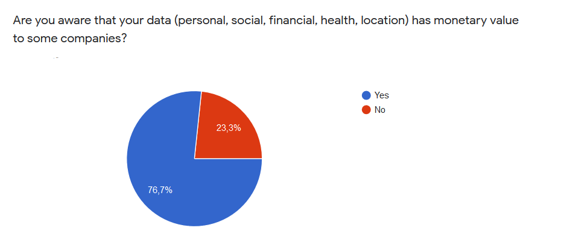

Introduction
With the increasing prevalence of IoT and AI, the need and value of data are at an all-time high. More than ever, companies are feeding off user
information in order to gain insight and make decisions which will increase their revenue.
What is not widely known is that this data, which is shown to have actual monetary value to many companies, is either given away during opt-in
license agreements or simply not used at all.


 What users are lacking is the ressources that will allow them to decide how take control of their data.
What users are lacking is the ressources that will allow them to decide how take control of their data.
Our challenge
Users unkowingly opt-in to provide personal data on a daily basis when using the platforms and tools scattered over the internet when they could potentially be selling this data at a higher price. YOUR demographic data, social data, financial data, health data has a monetary value therefore it is crucial to start taking control of your personal data and who can gain access to it. This is where FreeYourData comes into play.
Our solution
FreeYourData is a online data marketplace where users can go to in order to sell their data in return for monetary compensation. The online marketplace platform will allow for users to browse data categories and allow them to choose which data they wish to provide. While sales prices for different types of data will be suggested by FreeYourData, the platform will allow it's users the freedom to set their data to the desired sales price.
Understanding our users
The survey
Through the use of a survey we have written, we were able to extract relevant data about potential users which allowed us to learn about their specific needs
and their feelings towards an online marketplace.
To maximize the efficiency of our research, we start off the survey by asking demopgrahic type questions which will come in handy when trying
to generate personas or when simply trying to picture potential users and their characteristics.
These questions allowed us to gain more understanding about our users in terms of awareness of the value of their data, their level of comfort associated
with selling personal data, and their likeliness to share different categories of personal data.
In order to follow proper ethical practice, we started off our questionnaire with a consent form to which the surveyees could choose to agree too or not.
This consent form goes over the purpose, procedures, risks and benefits, as well as conditions of participating for this survey in order to ensure transparancy.
From this questionnaire we learned important information such as awareness of the value of data and likeliness to participate in a data marketplace.

Looking further into the data, it was clear to see correlations between age and willingness to participate in a data marketplace.
Surveyees in the ranges above the 25-34 age bracket showed a drastically high level of unwillingness to participate.
From this we concluded that our application should be oriented towards a younger audience with an emphasis on modern aesthetics and
mobile portability.
Representing the user
The data collected from the survey demonstrated that a wide demographic of users were interested in participating in a data marketplace to varying degrees. The next step was to generate users personas which could act as great examples of potential users of the FreeYourData platform. We ended up creating 2 personas for this case study but ultimately ended up focusing on one persona to demonstrate the user journey.
Our user personas
Lucinda Walker, a 21 year old University student from Montreal

Jeffrey Star, a 24 year old freelance web developer from Montreal
Jeffrey's journey
We generated a User Journey Map in order to demonstrate the user's journey in terms of our main user persona's goals, processes, problems, experience, ideas, and opportunities.
The following map describes the journey of Jeffrey which begins with the realization that his bank account funds are not accruing at a rate which he deems acceptable.
Annoyed by this, he decides to use FreeYourData in order to make some extra money.
He is interested by the current offers which are available on the application and is filled with joy when he finally decides to sell his health data.
Finally, Jeffrey goes through a feeling of serenity knowing that he is making progress in terms of his financial standing.
Sketches
After a quick brainstorm session, we decided to start with sketching out the main functionalities of this platform ; buying and selling data
This first sketch depicts the process of searching, selecting, and purchasing data based on search preferences
The second sketch has two non-sequential frames.
The first one depicts the process of selecting the type of data to sold and it's price to be set at on the market place
The second frame depicts the user's sales hub where offers and sales data can be viewed.
Wireframes
Due to our simple and structured approach used to generate our sketches, converting them into wifeframes was done with ease.
These wireframes depict the buying process.
These wireframes depict the selling process.
These wireframes depict the account creation process.
This wireframe depicts the logging in process.
These wireframes depict the user's profile and features associated with it.
Visual research
Our logo
Our initial efforts towards making our application visually pleasing started with designing the logo
The colorful and larger acronym "FYD" helps to add personality to our logo while the black and descriptive "FreeYourData" tag helps
by clearly transmitting the name of the platform.

Our first try at designing our logo resulted in something near our current logo but it was lacking something important : a nice color scheme.
In retrospect, we could have started by chosing a color scheme as this is the basis of many design components.
We found a scheme consisting of warm and pastel colors in order to appeal a younger generation of adults (18-24) and then applied it to our logo.
Our color scheme
The use of a warm color palette helps create a vibrant experience for our users.
The colors which make up the warm pallette coincide perfectly with the emotions that we want to transmit through our platform.
Red represents empowerment, importance, and youth ; a fitting color for a platform based around taking control of your own personal data.
Orange represents friendliness and energy which are emotions we wish to convey throughout the user's experience.
Yellow represents happiness and friendliness ; another set of emotions which are deemed to be enjoyable for the user's experience.